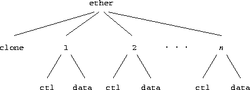
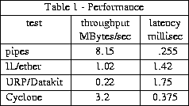

Plan 9 [Pike90] is a general-purpose, multi-user, portable distributed system implemented on a variety of computers and networks. What distinguishes Plan 9 is its organization. The goals of this organization were to reduce administration and to promote resource sharing. One of the keys to its success as a distributed system is the organization and management of its networks.
A Plan 9 system comprises file servers, CPU servers and terminals. The file servers and CPU servers are typically centrally located multiprocessor machines with large memories and high speed interconnects. A variety of workstation-class machines serve as terminals connected to the central servers using several networks and protocols. The architecture of the system demands a hierarchy of network speeds matching the needs of the components. Connections between file servers and CPU servers are high-bandwidth point-to-point fiber links. Connections from the servers fan out to local terminals using medium speed networks such as Ethernet [Met80] and Datakit [Fra80]. Low speed connections via the Internet and the AT&T backbone serve users in Oregon and Illinois. Basic Rate ISDN data service and 9600 baud serial lines provide slow links to users at home.
Since CPU servers and terminals use the same kernel, users may choose to run programs locally on their terminals or remotely on CPU servers. The organization of Plan 9 hides the details of system connectivity allowing both users and administrators to configure their environment to be as distributed or centralized as they wish. Simple commands support the construction of a locally represented name space spanning many machines and networks. At work, users tend to use their terminals like workstations, running interactive programs locally and reserving the CPU servers for data or compute intensive jobs such as compiling and computing chess endgames. At home or when connected over a slow network, users tend to do most work on the CPU server to minimize traffic on the slow links. The goal of the network organization is to provide the same environment to the user wherever resources are used.
Networks play a central role in any distributed system. This is particularly true in Plan 9 where most resources are provided by servers external to the kernel. The importance of the networking code within the kernel is reflected by its size; of 25,000 lines of kernel code, 12,500 are network and protocol related. Networks are continually being added and the fraction of code devoted to communications is growing. Moreover, the network code is complex. Protocol implementations consist almost entirely of synchronization and dynamic memory management, areas demanding subtle error recovery strategies. The kernel currently supports Datakit, point-to-point fiber links, an Internet (IP) protocol suite and ISDN data service. The variety of networks and machines has raised issues not addressed by other systems running on commercial hardware supporting only Ethernet or FDDI.
A central idea in Plan 9 is the representation of a resource as a hierarchical file system. Each process assembles a view of the system by building a name space [Needham] connecting its resources. File systems need not represent disc files; in fact, most Plan 9 file systems have no permanent storage. A typical file system dynamically represents some resource like a set of network connections or the process table. Communication between the kernel, device drivers, and local or remote file servers uses a protocol called 9P. The protocol consists of 17 messages describing operations on files and directories. Kernel resident device and protocol drivers use a procedural version of the protocol while external file servers use an RPC form. Nearly all traffic between Plan 9 systems consists of 9P messages. 9P relies on several properties of the underlying transport protocol. It assumes messages arrive reliably and in sequence and that delimiters between messages are preserved. When a protocol does not meet these requirements (for example, TCP does not preserve delimiters) we provide mechanisms to marshal messages before handing them to the system.
A kernel data structure, the channel, is a handle to a file server. Operations on a channel generate the following 9P messages. The session and attach messages authenticate a connection, established by means external to 9P, and validate its user. The result is an authenticated channel referencing the root of the server. The clone message makes a new channel identical to an existing channel, much like the dup system call. A channel may be moved to a file on the server using a walk message to descend each level in the hierarchy. The stat and wstat messages read and write the attributes of the file referenced by a channel. The open message prepares a channel for subsequent read and write messages to access the contents of the file. Create and remove perform the actions implied by their names on the file referenced by the channel. The clunk message discards a channel without affecting the file.
A kernel resident file server called the mount driver converts the procedural version of 9P into RPCs. The mount system call provides a file descriptor, which can be a pipe to a user process or a network connection to a remote machine, to be associated with the mount point. After a mount, operations on the file tree below the mount point are sent as messages to the file server. The mount driver manages buffers, packs and unpacks parameters from messages, and demultiplexes among processes using the file server.
The network code in the kernel is divided into three layers: hardware interface, protocol processing, and program interface. A device driver typically uses streams to connect the two interface layers. Additional stream modules may be pushed on a device to process protocols. Each device driver is a kernel-resident file system. Simple device drivers serve a single level directory containing just a few files; for example, we represent each UART by a data and a control file.
cpu% cd /dev cpu% ls -l eia* --rw-rw-rw- t 0 bootes bootes 0 Jul 16 17:28 eia1 --rw-rw-rw- t 0 bootes bootes 0 Jul 16 17:28 eia1ctl --rw-rw-rw- t 0 bootes bootes 0 Jul 16 17:28 eia2 --rw-rw-rw- t 0 bootes bootes 0 Jul 16 17:28 eia2ctl cpu%
Multiplexed devices present a more complex interface structure. For example, the LANCE Ethernet driver serves a two level file tree (Figure 1) providing

Although the driver interface may seem elaborate, the representation of a device as a set of files using ASCII strings for communication has several advantages. Any mechanism supporting remote access to files immediately allows a remote machine to use our interfaces as gateways. Using ASCII strings to control the interface avoids byte order problems and ensures a uniform representation for devices on the same machine and even allows devices to be accessed remotely. Representing dissimilar devices by the same set of files allows common tools to serve several networks or interfaces. Programs like stty are replaced by echo and shell redirection.
Network connections are represented as pseudo-devices called protocol devices. Protocol device drivers exist for the Datakit URP protocol and for each of the Internet IP protocols TCP, UDP, and IL. IL, described below, is a new communication protocol used by Plan 9 for transmitting file system RPC's. All protocol devices look identical so user programs contain no network-specific code.
Each protocol device driver serves a directory structure similar to that of the Ethernet driver. The top directory contains a clone file and a directory for each connection numbered 0 to n. Each connection directory contains files to control one connection and to send and receive information. A TCP connection directory looks like this:
cpu% cd /net/tcp/2 cpu% ls -l --rw-rw---- I 0 ehg bootes 0 Jul 13 21:14 ctl --rw-rw---- I 0 ehg bootes 0 Jul 13 21:14 data --rw-rw---- I 0 ehg bootes 0 Jul 13 21:14 listen --r--r--r-- I 0 bootes bootes 0 Jul 13 21:14 local --r--r--r-- I 0 bootes bootes 0 Jul 13 21:14 remote --r--r--r-- I 0 bootes bootes 0 Jul 13 21:14 status cpu% cat local remote status 135.104.9.31 5012 135.104.53.11 564 tcp/2 1 Established connect cpu%
The following steps establish a connection.
A stream [Rit84a][Presotto] is a bidirectional channel connecting a physical or pseudo-device to user processes. The user processes insert and remove data at one end of the stream. Kernel processes acting on behalf of a device insert data at the other end. Asynchronous communications channels such as pipes, TCP conversations, Datakit conversations, and RS232 lines are implemented using streams.
A stream comprises a linear list of processing modules. Each module has both an upstream (toward the process) and downstream (toward the device) put routine. Calling the put routine of the module on either end of the stream inserts data into the stream. Each module calls the succeeding one to send data up or down the stream.
An instance of a processing module is represented by a pair of queues, one for each direction. The queues point to the put procedures and can be used to queue information traveling along the stream. Some put routines queue data locally and send it along the stream at some later time, either due to a subsequent call or an asynchronous event such as a retransmission timer or a device interrupt. Processing modules create helper kernel processes to provide a context for handling asynchronous events. For example, a helper kernel process awakens periodically to perform any necessary TCP retransmissions. The use of kernel processes instead of serialized run-to-completion service routines differs from the implementation of Unix streams. Unix service routines cannot use any blocking kernel resource and they lack a local long-lived state. Helper kernel processes solve these problems and simplify the stream code.
There is no implicit synchronization in our streams. Each processing module must ensure that concurrent processes using the stream are synchronized. This maximizes concurrency but introduces the possibility of deadlock. However, deadlocks are easily avoided by careful programming; to date they have not caused us problems.
Information is represented by linked lists of kernel structures called blocks. Each block contains a type, some state flags, and pointers to an optional buffer. Block buffers can hold either data or control information, i.e., directives to the processing modules. Blocks and block buffers are dynamically allocated from kernel memory.
A stream is represented at user level as two files, ctl and data. The actual names can be changed by the device driver using the stream, as we saw earlier in the example of the UART driver. The first process to open either file creates the stream automatically. The last close destroys it. Writing to the data file copies the data into kernel blocks and passes them to the downstream put routine of the first processing module. A write of less than 32K is guaranteed to be contained by a single block. Concurrent writes to the same stream are not synchronized, although the 32K block size assures atomic writes for most protocols. The last block written is flagged with a delimiter to alert downstream modules that care about write boundaries. In most cases the first put routine calls the second, the second calls the third, and so on until the data is output. As a consequence, most data is output without context switching.
Reading from the data file returns data queued at the top of the stream. The read terminates when the read count is reached or when the end of a delimited block is encountered. A per stream read lock ensures only one process can read from a stream at a time and guarantees that the bytes read were contiguous bytes from the stream.
Like UNIX streams [Rit84a], Plan 9 streams can be dynamically configured. The stream system intercepts and interprets the following control blocks:
The convoluted syntax and semantics of the UNIX ioctl system call convinced us to leave it out of Plan 9. Instead, ioctl is replaced by the ctl file. Writing to the ctl file is identical to writing to a data file except the blocks are of type control. A processing module parses each control block it sees. Commands in control blocks are ASCII strings, so byte ordering is not an issue when one system controls streams in a name space implemented on another processor. The time to parse control blocks is not important, since control operations are rare.
The module at the downstream end of the stream is part of a device interface. The particulars of the interface vary with the device. Most device interfaces consist of an interrupt routine, an output put routine, and a kernel process. The output put routine stages data for the device and starts the device if it is stopped. The interrupt routine wakes up the kernel process whenever the device has input to be processed or needs more output staged. The kernel process puts information up the stream or stages more data for output. The division of labor among the different pieces varies depending on how much must be done at interrupt level. However, the interrupt routine may not allocate blocks or call a put routine since both actions require a process context.
The conversations using a protocol device must be multiplexed onto a single physical wire. We push a multiplexer processing module onto the physical device stream to group the conversations. The device end modules on the conversations add the necessary header onto downstream messages and then put them to the module downstream of the multiplexer. The multiplexing module looks at each message moving up its stream and puts it to the correct conversation stream after stripping the header controlling the demultiplexing.
This is similar to the Unix implementation of multiplexer streams. The major difference is that we have no general structure that corresponds to a multiplexer. Each attempt to produce a generalized multiplexer created a more complicated structure and underlined the basic difficulty of generalizing this mechanism. We now code each multiplexer from scratch and favor simplicity over generality.
Despite five year's experience and the efforts of many programmers, we remain dissatisfied with the stream mechanism. Performance is not an issue; the time to process protocols and drive device interfaces continues to dwarf the time spent allocating, freeing, and moving blocks of data. However the mechanism remains inordinately complex. Much of the complexity results from our efforts to make streams dynamically configurable, to reuse processing modules on different devices and to provide kernel synchronization to ensure data structures don't disappear under foot. This is particularly irritating since we seldom use these properties.
Streams remain in our kernel because we are unable to devise a better alternative. Larry Peterson's X-kernel [Pet89a] is the closest contender but doesn't offer enough advantage to switch. If we were to rewrite the streams code, we would probably statically allocate resources for a large fixed number of conversations and burn memory in favor of less complexity.
None of the standard IP protocols is suitable for transmission of 9P messages over an Ethernet or the Internet. TCP has a high overhead and does not preserve delimiters. UDP, while cheap, does not provide reliable sequenced delivery. Early versions of the system used a custom protocol that was efficient but unsatisfactory for internetwork transmission. When we implemented IP, TCP, and UDP we looked around for a suitable replacement with the following properties:
In keeping with the minimalist design of the rest of the kernel, IL is small. The entire protocol is 847 lines of code, compared to 2200 lines for TCP. IL is our protocol of choice.
A uniform interface to protocols and devices is not sufficient to support the transparency we require. Since each network uses a different addressing scheme, the ASCII strings written to a control file have no common format. As a result, every tool must know the specifics of the networks it is capable of addressing. Moreover, since each machine supplies a subset of the available networks, each user must be aware of the networks supported by every terminal and server machine. This is obviously unacceptable.
Several possible solutions were considered and rejected; one deserves more discussion. We could have used a user-level file server to represent the network name space as a Plan 9 file tree. This global naming scheme has been implemented in other distributed systems. The file hierarchy provides paths to directories representing network domains. Each directory contains files representing the names of the machines in that domain; an example might be the path /net/name/usa/edu/mit/ai. Each machine file contains information like the IP address of the machine. We rejected this representation for several reasons. First, it is hard to devise a hierarchy encompassing all representations of the various network addressing schemes in a uniform manner. Datakit and Ethernet address strings have nothing in common. Second, the address of a machine is often only a small part of the information required to connect to a service on the machine. For example, the IP protocols require symbolic service names to be mapped into numeric port numbers, some of which are privileged and hence special. Information of this sort is hard to represent in terms of file operations. Finally, the size and number of the networks being represented burdens users with an unacceptably large amount of information about the organization of the network and its connectivity. In this case the Plan 9 representation of a resource as a file is not appropriate.
If tools are to be network independent, a third-party server must resolve network names. A server on each machine, with local knowledge, can select the best network for any particular destination machine or service. Since the network devices present a common interface, the only operation which differs between networks is name resolution. A symbolic name must be translated to the path of the clone file of a protocol device and an ASCII address string to write to the ctl file. A connection server (CS) provides this service.
On most systems several files such as /etc/hosts, /etc/networks, /etc/services, /etc/hosts.equiv, /etc/bootptab, and /etc/named.d hold network information. Much time and effort is spent administering these files and keeping them mutually consistent. Tools attempt to automatically derive one or more of the files from information in other files but maintenance continues to be difficult and error prone.
Since we were writing an entirely new system, we were free to try a simpler approach. One database on a shared server contains all the information needed for network administration. Two ASCII files comprise the main database: /lib/ndb/local contains locally administered information and /lib/ndb/global contains information imported from elsewhere. The files contain sets of attribute/value pairs of the form attr=value, where attr and value are alphanumeric strings. Systems are described by multi-line entries; a header line at the left margin begins each entry followed by zero or more indented attribute/value pairs specifying names, addresses, properties, etc. For example, the entry for our CPU server specifies a domain name, an IP address, an Ethernet address, a Datakit address, a boot file, and supported protocols.
sys = helix dom=helix.research.bell-labs.com bootf=/mips/9power ip=135.104.9.31 ether=0800690222f0 dk=nj/astro/helix proto=il flavor=9cpu
ipnet=mh-astro-net ip=135.104.0.0 ipmask=255.255.255.0 fs=bootes.research.bell-labs.com auth=1127auth ipnet=unix-room ip=135.104.117.0 ipgw=135.104.117.1 ipnet=third-floor ip=135.104.51.0 ipgw=135.104.51.1 ipnet=fourth-floor ip=135.104.52.0 ipgw=135.104.52.1
tcp=echo port=7 tcp=discard port=9 tcp=systat port=11 tcp=daytime port=13
All programs read the database directly so consistency problems are rare. However the database files can become large. Our global file, containing all information about both Datakit and Internet systems in AT&T, has 43,000 lines. To speed searches, we build hash table files for each attribute we expect to search often. The hash file entries point to entries in the master files. Every hash file contains the modification time of its master file so we can avoid using an out-of-date hash table. Searches for attributes that aren't hashed or whose hash table is out-of-date still work, they just take longer.
On each system a user level connection server process, CS, translates symbolic names to addresses. CS uses information about available networks, the network database, and other servers (such as DNS) to translate names. CS is a file server serving a single file, /net/cs. A client writes a symbolic name to /net/cs then reads one line for each matching destination reachable from this system. The lines are of the form filename message, where filename is the path of the clone file to open for a new connection and message is the string to write to it to make the connection. The following example illustrates this. Ndb/csquery is a program that prompts for strings to write to /net/cs and prints the replies.
% ndb/csquery > net!helix!9fs /net/il/clone 135.104.9.31!17008 /net/dk/clone nj/astro/helix!9fs
CS provides meta-name translation to perform complicated searches. The special network name net selects any network in common between source and destination supporting the specified service. A host name of the form $attr is the name of an attribute in the network database. The database search returns the value of the matching attribute/value pair most closely associated with the source host. Most closely associated is defined on a per network basis. For example, the symbolic name tcp!$auth!rexauth causes CS to search for the auth attribute in the database entry for the source system, then its subnetwork (if there is one) and then its network.
% ndb/csquery > net!$auth!rexauth /net/il/clone 135.104.9.34!17021 /net/dk/clone nj/astro/p9auth!rexauth /net/il/clone 135.104.9.6!17021 /net/dk/clone nj/astro/musca!rexauth
Normally CS derives naming information from its database files. For domain names however, CS first consults another user level process, the domain name server (DNS). If no DNS is reachable, CS relies on its own tables.
Like CS, the domain name server is a user level process providing one file, /net/dns. A client writes a request of the form domain-name type, where type is a domain name service resource record type. DNS performs a recursive query through the Internet domain name system producing one line per resource record found. The client reads /net/dns to retrieve the records. Like other domain name servers, DNS caches information learned from the network. DNS is implemented as a multi-process shared memory application with separate processes listening for network and local requests.
The section on protocol devices described the details of making and receiving connections across a network. The dance is straightforward but tedious. Library routines are provided to relieve the programmer of the details.
The dial library call establishes a connection to a remote destination. It returns an open file descriptor for the data file in the connection directory.
int dial(char *dest, char *local, char *dir, int *cfdp)
fd = dial("net!research.bell-labs.com!login", 0, 0, 0, 0);
Dial accepts addresses instead of symbolic names. For example, the destinations tcp!135.104.117.5!513 and tcp!research.bell-labs.com!login are equivalent references to the same machine.
A program uses four routines to listen for incoming connections. It first announce()s its intention to receive connections, then listen()s for calls and finally accept()s or reject()s them. Announce returns an open file descriptor for the ctl file of a connection and fills dir with the path of the protocol directory for the announcement.
int announce(char *addr, char *dir)
int listen(char *dir, char *ldir)
int accept(int ctl, char *ldir) int reject(int ctl, char *ldir, char *reason)
The following code implements a typical TCP listener. It announces itself, listens for connections, and forks a new process for each. The new process echoes data on the connection until the remote end closes it. The "*" in the symbolic name means the announcement is valid for any addresses bound to the machine the program is run on.
int
echo_server(void)
{
int dfd, lcfd;
char adir[40], ldir[40];
int n;
char buf[256];
afd = announce("tcp!*!echo", adir);
if(afd < 0)
return -1;
for(;;){
/* listen for a call */
lcfd = listen(adir, ldir);
if(lcfd < 0)
return -1;
/* fork a process to echo */
switch(fork()){
case 0:
/* accept the call and open the data file */
dfd = accept(lcfd, ldir);
if(dfd < 0)
return -1;
/* echo until EOF */
while((n = read(dfd, buf, sizeof(buf))) > 0)
write(dfd, buf, n);
exits(0);
case -1:
perror("forking");
default:
close(lcfd);
break;
}
}
}
Communication between Plan 9 machines is done almost exclusively in terms of 9P messages. Only the two services cpu and exportfs are used. The cpu service is analogous to rlogin. However, rather than emulating a terminal session across the network, cpu creates a process on the remote machine whose name space is an analogue of the window in which it was invoked. Exportfs is a user level file server which allows a piece of name space to be exported from machine to machine across a network. It is used by the cpu command to serve the files in the terminal's name space when they are accessed from the cpu server.
By convention, the protocol and device driver file systems are mounted in a directory called /net. Although the per-process name space allows users to configure an arbitrary view of the system, in practice their profiles build a conventional name space.
Exportfs is invoked by an incoming network call. The listener (the Plan 9 equivalent of inetd) runs the profile of the user requesting the service to construct a name space before starting exportfs. After an initial protocol establishes the root of the file tree being exported, the remote process mounts the connection, allowing exportfs to act as a relay file server. Operations in the imported file tree are executed on the remote server and the results returned. As a result the name space of the remote machine appears to be exported into a local file tree.
The import command calls exportfs on a remote machine, mounts the result in the local name space, and exits. No local process is required to serve mounts; 9P messages are generated by the kernel's mount driver and sent directly over the network.
Exportfs must be multithreaded since the system calls open, read and write may block. Plan 9 does not implement the select system call but does allow processes to share file descriptors, memory and other resources. Exportfs and the configurable name space provide a means of sharing resources between machines. It is a building block for constructing complex name spaces served from many machines.
The simplicity of the interfaces encourages naive users to exploit the potential of a richly connected environment. Using these tools it is easy to gateway between networks. For example a terminal with only a Datakit connection can import from the server helix:
import -a helix /net telnet ai.mit.edu
philw-gnot% ls /net /net/cs /net/dk philw-gnot% import -a musca /net philw-gnot% ls /net /net/cs /net/cs /net/dk /net/dk /net/dns /net/ether /net/il /net/tcp /net/udp
We decided to make our interface to FTP a file system rather than the traditional command. Our command, ftpfs, dials the FTP port of a remote system, prompts for login and password, sets image mode, and mounts the remote file system onto /n/ftp. Files and directories are cached to reduce traffic. The cache is updated whenever a file is created. Ftpfs works with TOPS-20, VMS, and various Unix flavors as the remote system.
The file servers and CPU servers are connected by high-bandwidth point-to-point links. A link consists of two VME cards connected by a pair of optical fibers. The VME cards use 33MHz Intel 960 processors and AMD's TAXI fiber transmitter/receivers to drive the lines at 125 Mbit/sec. Software in the VME card reduces latency by copying messages from system memory to fiber without intermediate buffering.
We measured both latency and throughput of reading and writing bytes between two processes for a number of different paths. Measurements were made on two- and four-CPU SGI Power Series processors. The CPUs are 25 MHz MIPS 3000s. The latency is measured as the round trip time for a byte sent from one process to another and back again. Throughput is measured using 16k writes from one process to another.

The representation of all resources as file systems coupled with an ASCII interface has proved more powerful than we had originally imagined. Resources can be used by any computer in our networks independent of byte ordering or CPU type. The connection server provides an elegant means of decoupling tools from the networks they use. Users successfully use Plan 9 without knowing the topology of the system or the networks they use. More information about 9P can be found in the Section 5 of the Plan 9 Programmer's Manual, Volume I.